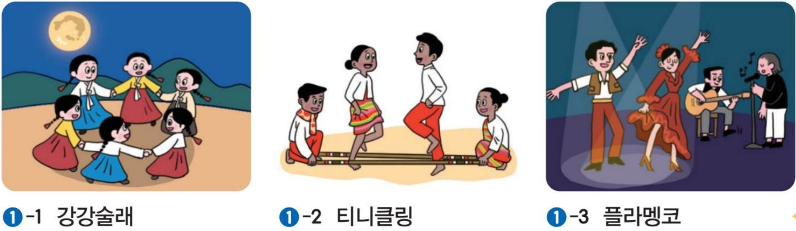
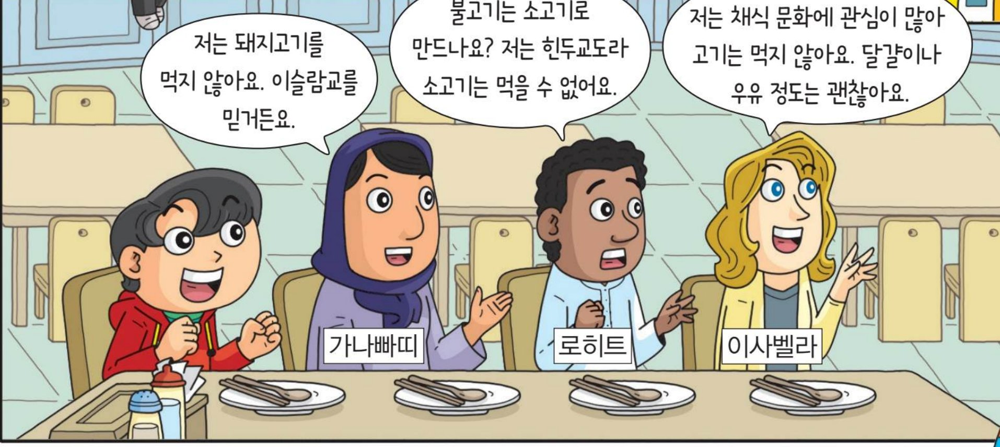

ㄱ. 일생에 걸쳐 이루어진다.
ㄴ. 배고픔과 같은 본능적 욕구는 사회화를 거쳐야 생겨난다.
ㄷ. 개인은 이 과정에서 독특한 개성과 자아를 형성한다.
ㄹ. 사회의 규범과 가치를 다음 세대에 전달한다.
ㅁ. 어느 사회에서 성장하든 사람의 특성은 같게 나타난다.
사회화는 ㉠ 가정, 또래 집단, 학교, 미디어 등 다양한 사회화 기관의 영향을 받는다. ㉡ 유아기에는 가정에서 언어와 기초적인 생활 습관을, ㉢ 아동기에는 또래 집단과 어울리며 함께 생활하는 규칙을 익힌다. ㉣ 청소년기에는 주로 직장에서 지식, 기술, 규범 등을 체계적으로 배우며, ㉤ 성인이 된 이후에도 미디어에서 정보를 얻으며 사회화 과정을 거친다.
(가) 서윤이는 영상 속 해외 의료 봉사 의사를 보고, 남을 돕는 일을 하겠다는 진로 목표를 세웠다.
(나) 하준이는 SNS 속 매우 마른 인물을 이상적 기준으로 삼아 끼니를 거르고 있다.
도윤이는 집에서 ㉠ 아들이자 ㉡ 라윤이의 오빠이고, 학교에서는 ㉢ ○○중학교 학생이자 ㉣ 축구 동아리 부장이다.
ㄱ. ㉠, ㉡은 태어나면서부터 갖게 되는 지위이다.
ㄴ. ㉢, ㉣은 개인의 선택이나 노력으로 갖게 되는 지위이다.
ㄷ. ㉣의 역할을 제대로 하지 못하면 비난을 받을 수 있다.
ㄹ. 전통 사회에서는 ㉣과 같은 지위의 영향력이 더 컸다.
(가) 연극 동아리 부장인 민지는 최종 연습 날과 할머니 생신 행사가 겹쳐 고민하고 있다.
(나) ○○ 회사의 많은 직원들이 업무와 육아를 함께 하는 데 공통적으로 어려움을 겪고 있다.
ㄱ. (가)는 두 지위에 따른 역할이 충돌하는 상황이다.
ㄴ. (가)는 우선순위를 고려하여 중요한 것부터 수행하는 것이 바람직하다.
ㄷ. (나)는 제도 마련보다 직원 각자의 노력이 우선이다.
ㄹ. (나)의 해결을 위해 직장 내 보육 시설을 늘릴 수 있다.
ㅁ. (가), (나)와 같은 갈등은 사회가 단순할수록 많아진다.
지후는 소속감을 느끼는 ○○중 야구부(A)의 부원이다. 지후는 연습 경기에서 처음 만난 △△중 야구부(B) 선수들에게 경계심을 느꼈다.
ㄱ. 지후에게 A는 내집단, B는 외집단이다.
ㄴ. 지후는 B보다 A의 구성원에 대해 더 상세히 알 것이다.
ㄷ. B는 지후가 속하지 않았으므로 사회 집단이 아니다.
ㄹ. 부족한 정보로 B를 빠르게 판단하면 편견이 생길 수 있다.
ㄱ. 같은 일을 하는 외국인 직원에게 임금을 적게 주었다.
ㄴ. 시험에 불합격한 사람에게 면허증을 발급하지 않았다.
ㄷ. 여성 지원자에게만 결혼과 출산 계획을 질문하였다.
ㄹ. 영화관 상영관에 휠체어석을 마련하였다.
ㅁ. 특정 지역 출신이라는 이유로 승진에서 제외하였다.
버스에 경사판을 설치하는 것처럼 성별, 연령, 국적, 장애의 유무와 상관없이 누구나 쓸 수 있는 ( A )이/가 적용된 공공시설이 늘고 있다.
ㄱ. 발표 전에 긴장하여 손이 떨렸다.
ㄴ. 복날에 삼계탕을 먹는다.
ㄷ. 민수는 고민할 때 손톱을 물어뜯는다.
ㄹ. 추석에 송편을 빚어 나누어 먹는다.
ㅁ. 점심을 먹은 후 졸려서 하품을 했다.

㉠ 외국에서 자란 사촌은 김치를 무척 낯설어했다.
㉡ 이웃이 김장하는 모습을 보면 우리 집도 곧 김장할 것을 짐작할 수 있다.
㉢ 문헌에 기록된 제조법을 토대로 새로운 김치가 등장한다.
㉣ 아파트에서는 김치를 땅에 묻을 수 없어 김치냉장고를 쓴다.
㉤ 요즘은 김장 대신 공장 김치를 사 먹는 가정이 늘고 있다.
| 변동성 | 전체성 | 변동성 | 전체성 | ||
|---|---|---|---|---|---|
| ① | ㉠ | ㉣ | ② | ㉢ | ㉤ |
| ③ | ㉣ | ㉡ | ④ | ㉣ | ㉤ |
| ⑤ | ㉤ | ㉣ |
| 활용한 미디어 | 활용 내용 |
|---|---|
| 라디오 | 음악 방송 청취 |
| SNS | 친구 사진에 댓글 작성 |
| 동영상 공유 플랫폼 | 직접 찍은 영상 일기 게시 |
| 텔레비전, 신문 | 뉴스 시청, 기사 읽기 |
ㄱ. 인쇄 매체에 해당하는 것은 한 가지이다.
ㄴ. 텔레비전은 쌍방향 소통을 가능하게 한 새로운 미디어이다.
ㄷ. 영상 일기 게시는 정보 생산자와 소비자의 경계가 무너지고 있음을 보여 준다.
ㄹ. SNS 댓글은 직접 만나지 않았으므로 미디어 활용이 아니다.
(가) A 씨는 사실이라고 믿은 건강 정보를 가족 대화방에 공유했는데, 틀린 내용이었다.
(나) B 업체는 수익을 올리려고 건강식품 효능을 부풀린 거짓 영상을 퍼뜨렸다.
ㄱ. 외국인 인구수는 조사 시기마다 계속 증가하였다.
ㄴ. 2022년 외국인 인구수는 2010년의 2배 이상이다.
ㄷ. 외국인 인구 비율은 2015~2020년에 가장 크게 늘었다.
ㄹ. 다양한 문화적 배경을 지닌 구성원이 늘고 있다.
(가) 인도에서 소는 농사와 생계에 필수적이어서, 힌두교는 소고기를 먹는 것을 금기로 정하였다.
(나) 이슬람교가 발생한 건조한 지역에서는 물이 많이 드는 돼지를 키우기 어려워, 돼지고기를 금지하였다.
ㄱ. (가)에는 소가 생계에 필수인 환경이 반영되어 있다.
ㄴ. (나)는 물이 너무 많은 습한 기후 때문이다.
ㄷ. 인간은 환경에 적응하며 독특한 생활 방식을 형성한다.
ㄹ. (가), (나)의 금기는 모든 문화권이 따라야 한다.

(가) 가상의 A국 정부는 자국 종교만 옳다며 다른 종교의 석불 유적을 파괴하였다.
(나) 일부 지역에 남은 조혼 풍습으로 소녀들이 건강을 잃고 학교를 그만두고 있다.
ㄱ. (가)의 태도는 고유문화를 사라지게 만들 수 있다.
ㄴ. (가)의 태도는 다른 문화권과 갈등을 빚을 수 있다.
ㄷ. (나)는 문화 상대주의 관점에서 존중해야 한다.
ㄹ. (나)는 보편적 가치를 해치므로 인정하기 어렵다.
ㄱ. 국회가 법률 개정안을 통과시켰다.
ㄴ. 가족회의로 여름휴가 장소를 정하였다.
ㄷ. 정부가 저출생 정책을 집행하였다.
ㄹ. 학급 회의로 반 티셔츠 색을 정하였다.
ㅁ. 혼자 도서관에서 수학 과제를 하였다.
아테네에서는 ① 시민들이 선거로 뽑은 대표가 중요한 일을 결정하였다. ② 영국의 명예혁명은 시민들이 소수 특권 계층에 대항한 혁명이다. 근대 시민 혁명은 ③ 상공업으로 부를 쌓은 시민 계급이 주도하였다. ④ 차티스트 운동은 여성을 포함한 모든 성인의 선거권을 요구하였고, ⑤ 보통 선거 제도는 19세기 초에 확립되었다.
(가) 일정 규모 이상의 사용자는 정해진 비율에 따라 장애인을 고용해야 한다.
(나) 경찰은 체포할 때 진술 거부권과 변호인 선임권을 알려 주어야 한다.
ㄱ. (가), (나)는 인간의 존엄성 실현과 관련이 있다.
ㄴ. (가)는 기회 균등만으로 평등이 실현된다고 본다.
ㄷ. (가)는 실질적인 평등을 누리게 하려는 제도이다.
ㄹ. (나)는 자유와는 관련이 없다.
(가) 주민들이 주민 소환 투표로 시장을 임기 전에 물러나게 하였다.
(나) 헌법에 따라 국가 기관을 구성하고, 기본권 침해 시 헌법 소원을 한다.
(다) 국회, 정부, 법원이 서로 견제한다.
| (가) | (나) | (다) | |
|---|---|---|---|
| ① | 국민 주권 | 권력 분립 | 입헌주의 |
| ② | 국민 자치 | 권력 분립 | 입헌주의 |
| ③ | 입헌주의 | 국민 주권 | 권력 분립 |
| ④ | 국민 자치 | 입헌주의 | 권력 분립 |
| ⑤ | 국민 주권 | 입헌주의 | 국민 자치 |
(가) 일정 수의 유권자가 중요한 법안을 제안한다.
(나) 선출된 공직자를 임기 전에 투표로 그만두게 한다.
(다) 국가의 중대한 사항을 국민이 직접 투표로 결정한다.
(라) 법률 개정 등을 국가 기관에 문서로 요구한다.
| (가) | (나) | (다) | (라) | |
|---|---|---|---|---|
| ① | 국민 발안 | 국민 소환 | 국민 투표 | 청원 |
| ② | 국민 발안 | 국민 투표 | 국민 소환 | 청원 |
| ③ | 청원 | 국민 소환 | 국민 투표 | 국민 발안 |
| ④ | 국민 투표 | 청원 | 국민 발안 | 국민 소환 |
| ⑤ | 청원 | 국민 투표 | 국민 소환 | 국민 발안 |
ㄱ. 연령대가 높을수록 투표율이 높다.
ㄴ. 낮은 투표율은 정치적 무관심의 모습으로 볼 수 있다.
ㄷ. 복지 요구가 늘면서 사법부의 역할이 커지고 있다.
ㄹ. 공정한 선거 제도와 시민의 지속적 참여가 필요하다.
지우는 어린이 보호 구역 법률 개정을 요구하는 청원을 국회 '국민 동의 청원' 누리집에 올리고 SNS로 알렸다. 이 청원은 일정 수 이상의 동의를 받아 국회 담당 위원회에서 처리되었다.
ㄱ. 직접 만나지 않고도 입법 과정에 영향을 줄 수 있다.
ㄴ. 전자 민주주의의 모습을 보여 준다.
ㄷ. 동의를 얻은 청원은 국민 투표로 곧바로 법률이 된다.
ㄹ. SNS로 알린 것은 여론의 형성 및 전달에 해당한다.
16세 이상의 주민들이 모여 지역의 중요한 일을 토론하고, 찬성하는 사람이 투표용지를 들어 올려 결정한다.